上一个帖子介绍了各界人士对“四·二六社论”迥异的反应，接下来聊聊社论引发的427大游行。
在前面的博文中，介绍了23日晚上成立的“临时学联”——这是一个跨院校的民间学生组织，之后改名为“北京高校学生自治联合会”（简称“高自联”或“北高联”）。427大游行跟高自联有很密切的关系。所以，俺简单说一下高自联是如何筹划这次游行的。
据《天安门对峙》一书的记载：4月25日晚，临时学联（高自联）的各校代表齐聚政法大学的某教室开代表大会。在开会期间，官方正好通过中央电台广播“426社论”。于是各位代表暂时中断开会，听官方广播。听完之后，代表们都很愤慨，经过投票，决定在27日发动大规模示威游行，以抗议官方的社论。
据官方的《惊心动魄的五十六天》记载：高自联在当晚23点发出通知：
第二天（26日）上午，临时学联（高自联）在政法大学主楼前的广场上，举行了一个记者招待会。有1500~2000多学生和50~100多中外记者参加。在招待会上宣布了如下几项内容：
正式对外宣布临时学联（高自联）成立
本学生组织的宗旨是“民主、科学、自由、法制、人权”，采用“和平请愿”的斗争形式。
提出三项要求
1. 要求与李鹏等政府领导人对话，承认首都高校学生联合会。
2. 要求公安部长王芳就“420事件”中警察殴打学生一事公开道歉，并严惩凶手。
3. 要求新华社社长穆青道歉。因为新华社对“420事件”进行了歪曲报导，违反了新闻报导真实的最基本原则。
宣布427大游行
游行的目的：向全国人民表明，七条要求不是动乱。
游行的统一口号是：
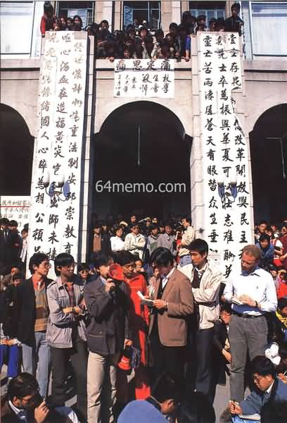
（政法大学主楼前的记者招待会）
俺稍微解释一下上述这些口号：
这10条口号其实是很有讲究滴。稍微琢磨一下就会发现：这些口号跟朝廷官方的宣传口径是完全一致的。高自联的领导层精心选择这些口号，主要目的就是防止朝廷栽赃，说学生们搞动乱。
俺在前面的帖子里，已经介绍了朝廷密探的神通广大（学生组织内部很可能有卧底）。对于临时学联（高自联）要搞的大游行，朝廷自然很清楚，并采取了如下一些措施，应对427大游行。
根据《天安门文件》记载：
除了调动正规军到广场周边警戒，朝廷还调动大批警察在关键路口设置封锁线，以阻止游行队伍通过。第1道封锁线在中关村路口、第2道封锁线在人民大学南侧、第3道封锁线在白石桥。其它几道封锁线设置在市区的一些路口。
为了瓦解这次游行，几个高校的领导分别找各自学校的学生领袖谈话，要求他们取消这次游行。周勇军作为当时高自联的轮值主席，成为重点谈话对象。校方的人采用车轮战术，不断向他施加压力，不断问他类似的问题：
到这是已经是深夜时分。为了让各个高校的学生代表看到周勇军的“手谕”，北京市政府派出一辆专车，以飞快地的速度辗转各个高校，每到一个高校，就叫上该校的学生代表，把这张纸条给学生代表过目，然后跟学生代表说，高自联已经取消游行。一直折腾到凌晨，几乎每个高校的学生领袖都看到了字条，不少人以为游行被取消了。
虽然朝廷软硬兼施，企图把427游行扼杀在萌芽之中。但到了27日上午，还是有很多高校的学生上街了。为啥会这样捏？俺认为有如下原因：
1. 低估了学生上街的热情
朝廷以为，只要搞定了高自联，使其发布取消游行的通告，学生就不会上街了。显然，朝廷低估了学生们愤慨的热情。俺在前一个帖子已经介绍了，很多大学生对"426社论"相当反感。这种反感自然转变为上街示威的动力。
更加令人敬佩额的是，很多学生上街之前，已经写了遗书。因为当时盛传朝廷要武力镇压游行，而且426社论的口气很强硬，所以不少学生都作了流血甚至死亡的准备。
2. 高估了高自联的能力
要知道，高自联是23日晚上才成立的。到26日上午开记者招待会，宣布427游行，也才只有2天多时间。这样一个刚诞生不久的组织，对北京高校的学生还不具有足够的影响力。打个比方，当时的高自联只能起到“油门”的作用，但无法起到“刹车”的作用。所以，周勇军那个取消游行的“手谕”，是无法阻止大学生们上街滴。
另外，某些高校的知名度较大（比如：北大、清华），未必甘愿被高自联领导。这些高校的学生领袖虽然看到了周勇军的字条，以为高自联取消了游行，但他们还是想单干。其中，北京大学是这类高校的代表，而且北大的决策过程比较曲折，俺专门聊一下。
话说胡耀邦逝世后，北大也成立了自己的民间学生组织——北大筹委会（全称是“北京大学团结学生会筹备委员会”）。虽然叫做“团结学生会筹委会”，但这个筹委会的高层，一直不是很团结，纠纷和矛盾不断（大概是北大牛人多，谁也不服谁）。4月24日召开全校大会的时候，还发生了一个丑闻——几个学生领袖（丁小平、熊焱、张智勇、等）在台上互相指责，抢夺话筒。
由于24日全体大会的失败，北大筹委会在25日进行常委改选。改选后的五人常委分别是：“封从德 孔庆东 沈彤 王迟英 王丹”（按音序排列）。请注意，五人中的孔庆东，就是如今天朝大名鼎鼎的孔三妈（很激进的毛派粉丝）。下图是当年孔庆东参加学生运动的照片（请看照片边上斜眼的那个）。
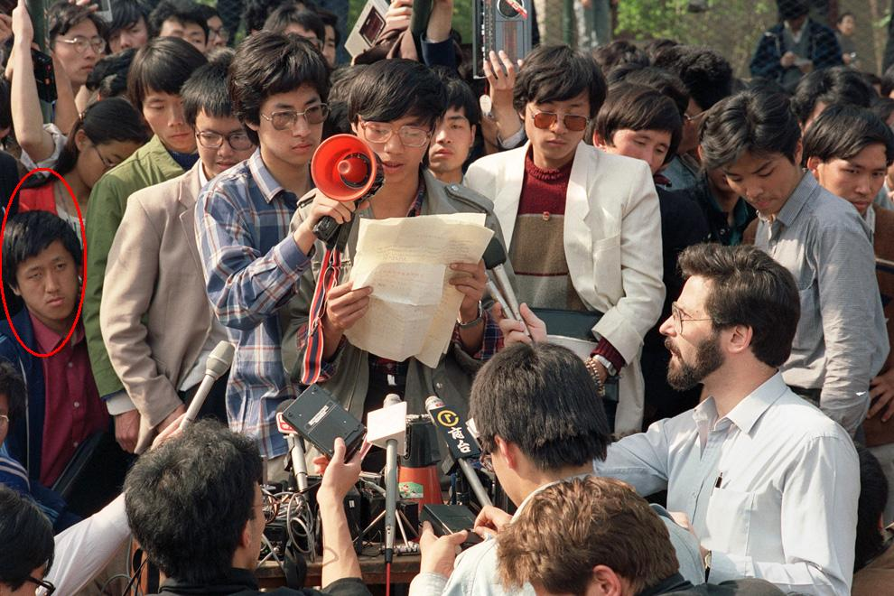
（王丹在召开记者招待会，红圈圈标出的是孔庆东）
既然提到孔庆东，顺便跑题一下，说说此人。
封从德后来在《六四日记——广场上的共和国》一书，多次质疑孔庆东在那段日子的表现，认为此人居心叵测。网上也有网友怀疑，孔庆东当年参加学生运动，是当局安插的卧底。理由是：孔庆东曾经担任过北大筹委会常委；但是六四之后，不但没有上通缉榜，反而在北大还混得挺滋润，升到了教授。俺目前并未找到证据证明此人是卧底，但此人当年的某些言行也确实可疑。估计要等将来伟光正垮台后，解密国家档案才能知道孔斜眼的真面目。
跑题结束，言归正传。
从历史渊源来看，北大一直是学生运动的招牌和发源地。因此，北大筹委会不太甘心被高自联领导。26日周勇军的字条，对北大筹委会没有太大的影响力。
在那天，对于是否上街游行，五人常委进行了投票表决。投票的结果是：封从德 王丹 两票同意，孔庆东 沈彤 王迟英 三票反对。但是封从德不服气，根据筹委会的章程召开扩大会议（每个院系都派代表参加）。扩大会议的表决结果是：超过三分之二的人同意上街游行。既然扩大会议支持游行，孔庆东 沈彤 王迟英 三人也不好再反对。
但是北大筹委会当时还面临另一个难题：他们不知道其它高校第二天是否会上街？当时坊间盛传，朝廷已调动大批军警，准备武力镇压427游行。如果第二天只有北大一个学校上街，如果不幸再碰上军警镇压，后果很严重。基于这个考虑，北大筹委会的委员们经过激烈争论后，决定降低游行规格，只从校门口走到北三环就返回，不进入闹市区。
到了27日上午，大约几千名学生聚集在北大校门口。8点45分，正式从学校出发。
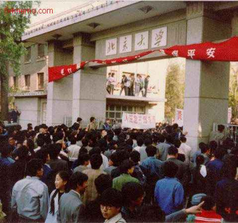
（游行队伍聚集在北大校门口，准备出发）
北大的学生一出发，就有骑自行车的人把消息传到人民大学（当时没有手机也没有电动车，通讯基本靠脚）。本来人大的学生吃不准要不要搞游行——因为他们在前一天也收到了周勇军的字条，以为游行取消了。听到北大学生上街的消息，人大的学生显然很振奋。一转眼的功夫，校门口就聚了一大帮人。而且人大的队伍没有等北大的队伍到来并与之会合；相反，他们直接出了校门往南走，走在了北大队伍的前面。
由于人大也出动了，而且走在北大的前面。所以，当北大的队伍走到北三环后，就不可能再折回学校了（那样就太怂了）。最终，北大的领队临时改变方案，一路走到广场。
还有一些学校的领导，为了不让学生们出去游行，关闭学校大门。结果学生们就翻越校门，出去参加游行。
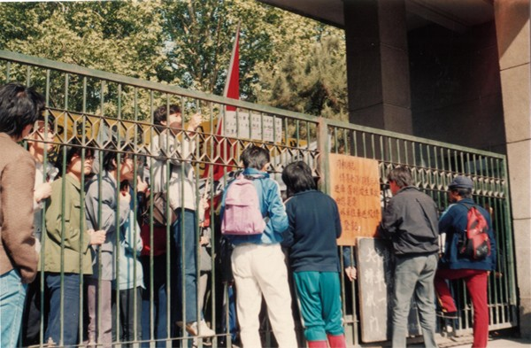
（这张照片拍摄于某高校门口——学生们正准备攀爬校门）
在这些学校中，值得一提的是北京中医学院。之前的全市罢课中，北京中医学院是唯一没有参加全市罢课的，为这还被《人民日报》表扬过。但很多中医学院的学生把《人民日报》的表扬当成奇耻大辱。在27日这天，非常多的学生翻越校门、出去游行，以此挽回面子。
跟之前的几次游行相比，427游行呈现出如下几个特色。
为了避免被朝廷污蔑为“动乱”，很多游行的标语，都是直接引用《邓小平文选》的原话——这样一来，朝廷就无法挑刺。比如政法大学准备了几块大的标语牌，分别写上如下几条老邓的语录。照片如下：
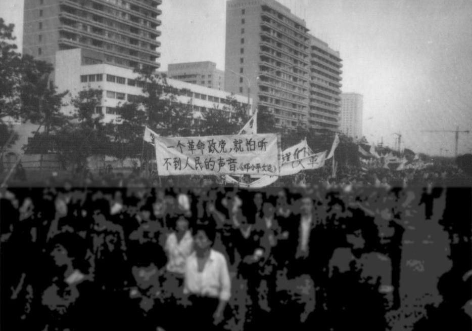
还有这几张照片中的标语，也是引用老邓的原话，不晓得出自哪个大学。
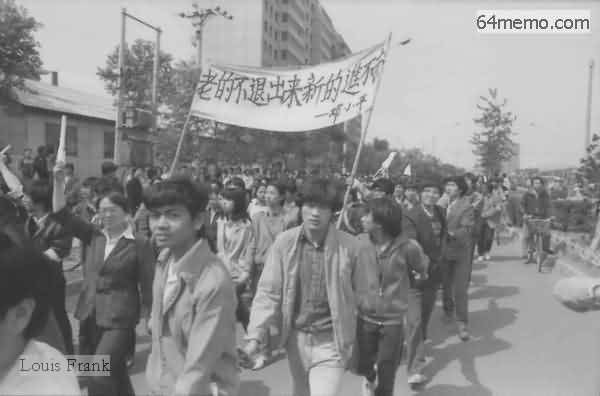
（横幅标语：
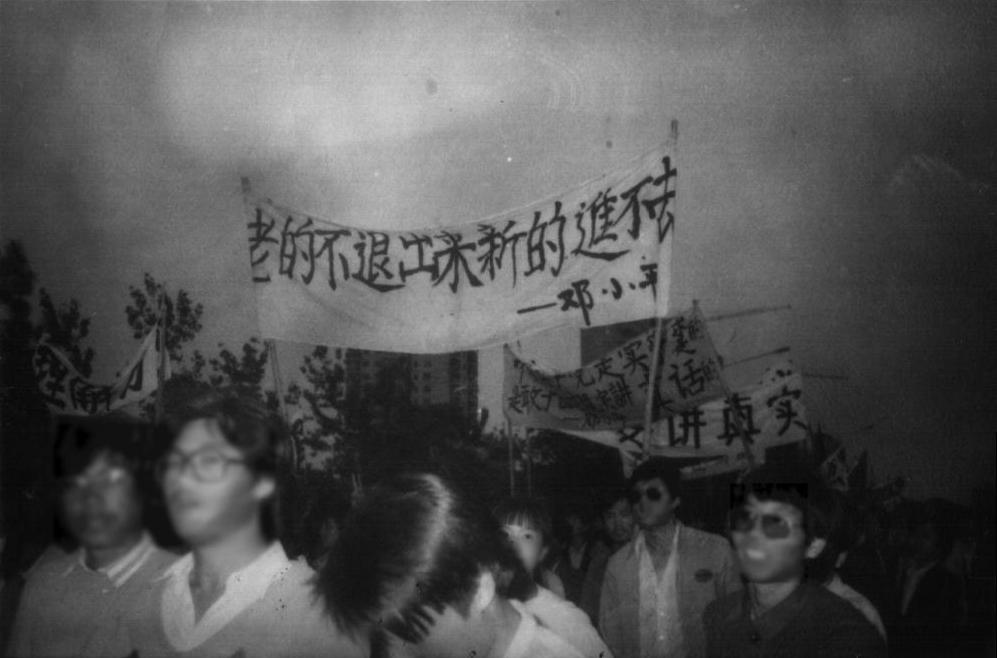
（横幅标语：

（横幅标语：
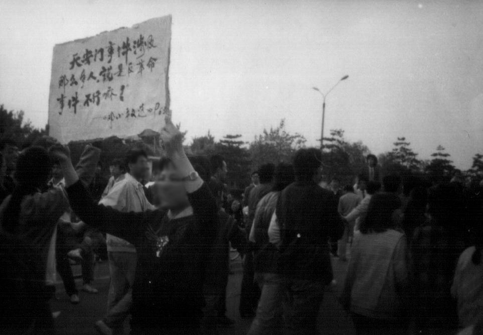
另有一些标语是专门针对426社论的标题（旗帜鲜明地反对动乱）而进行讽刺。比如下面这几张。
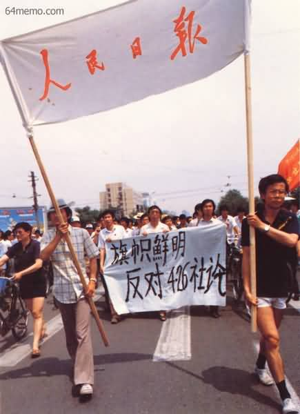
（横幅标语：
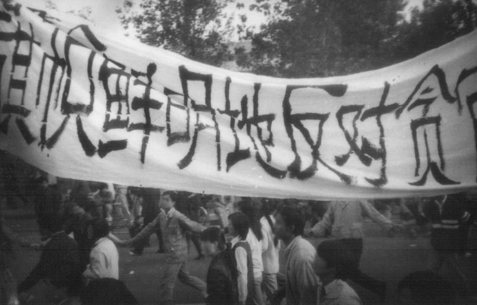
（横幅标语：
虽然高自联在记者招待会上，宣布了此次游行的统一口号，但还是有很多学生临场发挥，喊出了另外的口号。下面摘录几条：
不同于前几天的那些游行，427大游行得到了北京市民的广泛支持。除了有大批的市民在路边夹道欢迎，还有不少市民自发给学生送点心、冷饮、汽水。甚至有些摆摊的个体户，把整箱的可口可乐放到路边给学生喝。《新观察》的记者还听到某些路边的个体户在说：
另有某游行的学生戏称：今天的游行不光走遍北京闹市区，还吃遍北京的点心。
对于市民的积极支持，清华某教师说：
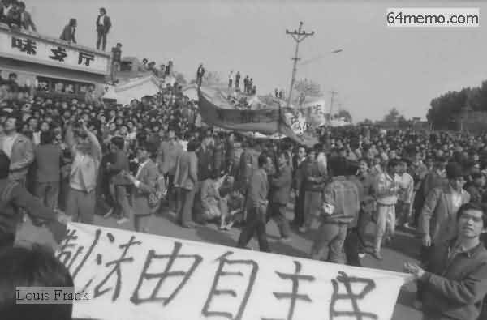
（围观游行的群众都爬上屋顶了）
另外，很多北京市民不仅仅满足于围观，还跟学生们一起高呼口号；遇到警方的封锁线，一些市民也积极地帮助学生推倒警方的人墙。下面介绍一下突破封锁线的情形。
前面提到，朝廷为了应对427大游行，部署了多道封锁线。负责封锁的警察，手臂挽着手臂，组成多道人墙，以阻止游行队伍通过。
但是朝廷在部署封锁线的时候，大概没有用统筹学对部署进行优化。在高校附近（靠近郊区）的封锁线，警察较少；在闹市区的封锁线，警察较多。
学生刚出校门的时候，游行队伍虽然规模小，但是封锁线只有1-2道人墙，一下就被学生突破了；到了闹市区，游行队伍的规模已经很大（汇合了许多高校），虽然某些路口有多达10道人墙，依然被学生的游戏队伍突破。
为了突破警方的人墙，学生们双管齐下——体力和脑力并用。
体力方面，就是靠人多，不断往人墙上挤压。虽说这些警察们身强力壮，但也经不住这么多人又推又挤。脑力方面，学生们采用了一些心理战术。有的学生高喊口号：“人民警察爱人民”、“提高警察社会地位，提高警察工资待遇”；还有一些学生齐声高唱当时热播的电视剧《便衣警察》的主题曲（歌词是：“几度风雨、几度春秋......”，“80前”的网友，应该熟悉这歌吧？）
下面是游行队伍突破封锁线的照片，从照片中可见，警察的人墙犹如汪洋中的孤岛。
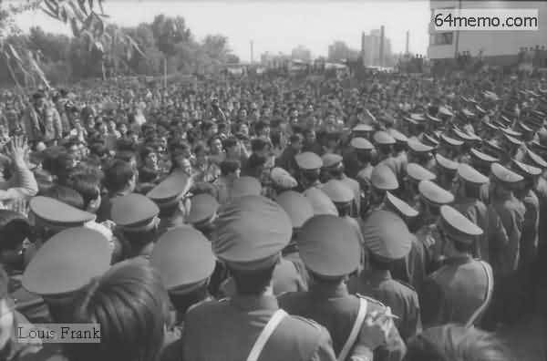
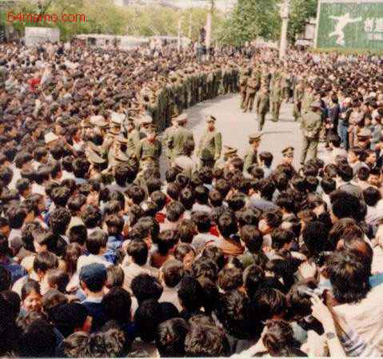
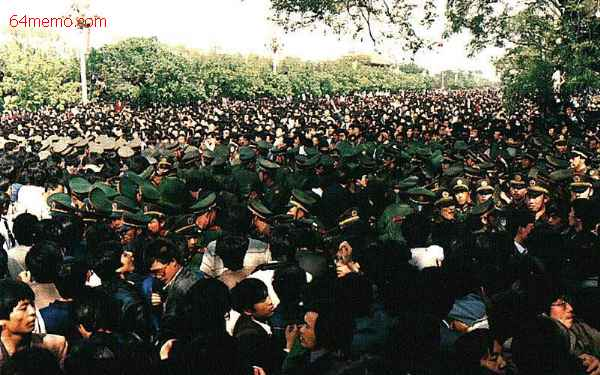
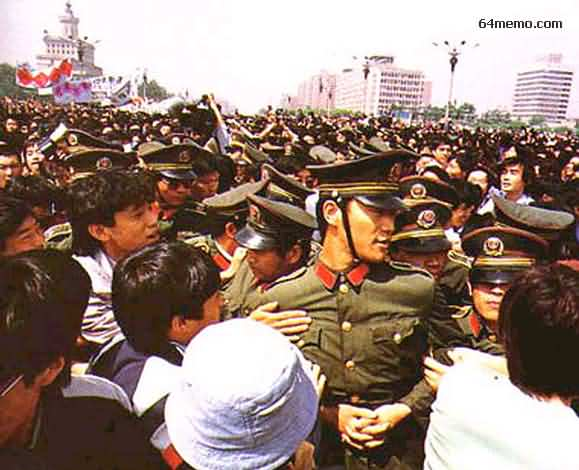
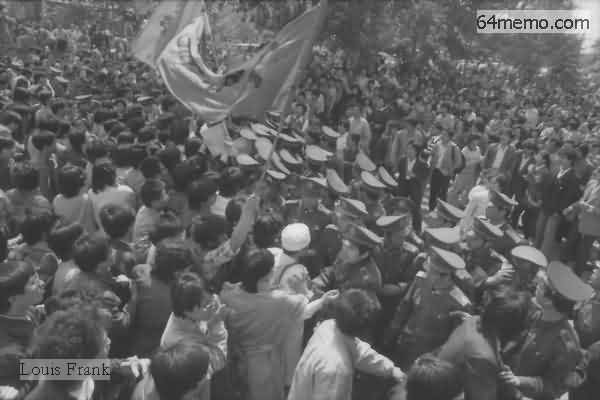
顺便说一下。当天街上的警察大都是北京当地人，他们也不想太为难学生。但警察也有难处，某警察对《新观察》的记者说：
由于闹市区的封锁线接连被突破，朝廷紧急用卡车调来大批军人。但是卡车一来，就被学生和市民团团围住，军人连车都下不来。还有北京市民对车上的军人说：
请看如下照片
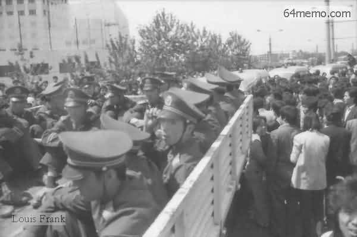

突破了多重封锁之后，所有高校的游行队伍都到了长安街，然后自西向东，浩浩荡荡通过长安街。这时候学生的人数更庞大，长安街上的封锁线不堪一击。长安街两旁的人行道上，围观的市民也是人山人海。
这里还有个小插曲：当学生走到东单附近的《北京日报》社，很多学生齐声高喊
当时的盛况可以从如下照片看出来——宽阔的马路上挤满了学生的队伍，到处是标语和旗帜的海洋。估计不少年轻的网友，这辈子还没亲身体验过这种场面。
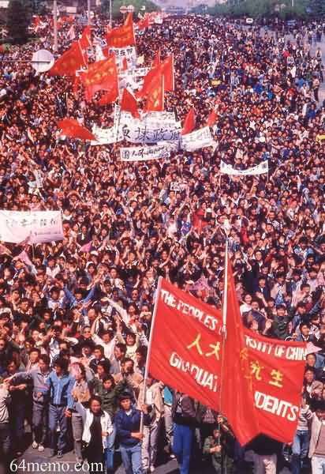
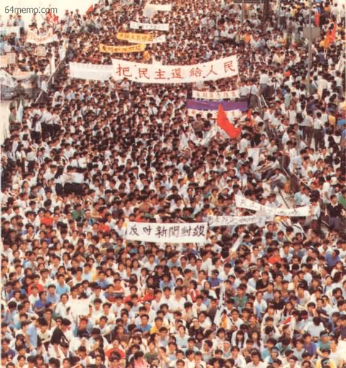
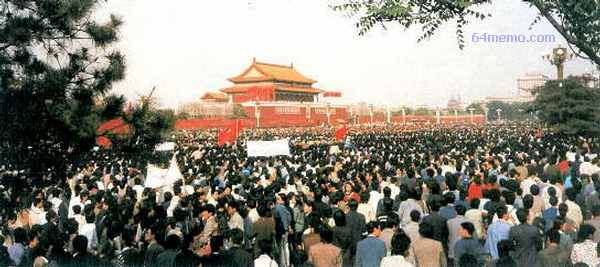
整个游行队伍花了1小时45分钟，走完长安街，到达长安街东边的建国门。此时天色已晚。于是，各个高校的学生就开始打道回府。虽说是打道回府，但还要再走好几个小时。当最后一支学生队伍回到校园，已经接近半夜12点。整个游行耗时超过15小时，行程大约30公里。
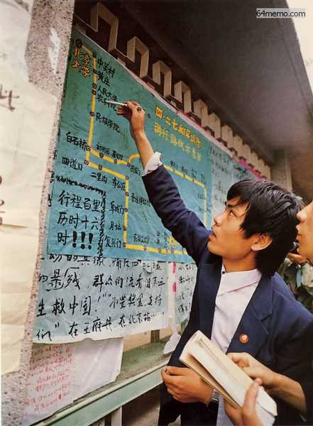
（28日张贴在某高校布告栏的427路线图）
关于那天上街游行的学生人数，各方给出的数字，出入很大。
官方给出的数字是3万学生参加。这个数字是从各个高校上报的数字汇总的。实际上捏，每个高校的领导为了避免承担责任，都有意缩小上报的人数。
有人在长安街根据游行队伍通过的时间，以及游行队伍的人数密度，估计了一下，总人数大约10万左右。
《天安门对峙》一书称：
如果光从参与的学生人数来看，427游行并不是“六四运动”中最大规模的——后来5月份的几次游行，规模都远超“427游行”。但427游行被中外媒体广泛报道，而且规模和影响程度也大大超过了此前的几次游行，所以很多亲历过北京六四运动的学生，对427游行的印象很深（第一印象总是很深刻）。
除了人数创新高，俺觉得427游行还有如下特点：
1. 北京市民的大力参与和支持
2. 游行队伍严密的组织和纪律
3. 用温和的方式突破官方的封锁
很多海外媒体对427游行的评价也很高。香港《明报》在次日（28日）的社论中是这样评价427游行的：
连公安部内部人员都说：
（除了文中注明的引用书目，本文还参考了《新观察》杂志八九年第10期的《北京四·二七游行目击记》，照片引自 六四档案、自由中国论坛、华夏文摘）
回到本系列的目录
★学生组织的筹划
在前面的博文中，介绍了23日晚上成立的“临时学联”——这是一个跨院校的民间学生组织，之后改名为“北京高校学生自治联合会”（简称“高自联”或“北高联”）。427大游行跟高自联有很密切的关系。所以，俺简单说一下高自联是如何筹划这次游行的。
◇427大游行的决策
据《天安门对峙》一书的记载：4月25日晚，临时学联（高自联）的各校代表齐聚政法大学的某教室开代表大会。在开会期间，官方正好通过中央电台广播“426社论”。于是各位代表暂时中断开会，听官方广播。听完之后，代表们都很愤慨，经过投票，决定在27日发动大规模示威游行，以抗议官方的社论。
据官方的《惊心动魄的五十六天》记载：高自联在当晚23点发出通知：
27日，全市统一游行，到天安门汇合，抗议《4.26社论》。
◇记者招待会
第二天（26日）上午，临时学联（高自联）在政法大学主楼前的广场上，举行了一个记者招待会。有1500~2000多学生和50~100多中外记者参加。在招待会上宣布了如下几项内容：
正式对外宣布临时学联（高自联）成立
本学生组织的宗旨是“民主、科学、自由、法制、人权”，采用“和平请愿”的斗争形式。
提出三项要求
1. 要求与李鹏等政府领导人对话，承认首都高校学生联合会。
2. 要求公安部长王芳就“420事件”中警察殴打学生一事公开道歉，并严惩凶手。
3. 要求新华社社长穆青道歉。因为新华社对“420事件”进行了歪曲报导，违反了新闻报导真实的最基本原则。
宣布427大游行
游行的目的：向全国人民表明，七条要求不是动乱。
游行的统一口号是：
1 拥护共产党、拥护社会主义游行的歌曲是：《团结就是力量》
2 民主万岁
3 反官僚、反腐败、反特权
4 维护宪法
5 爱国无罪
6 新闻要讲真话，抗议诬陷
7 人民万岁
8 稳定物价
9 国家兴亡，匹夫有责
10 人民警察保护人民
（政法大学主楼前的记者招待会）
俺稍微解释一下上述这些口号：
这10条口号其实是很有讲究滴。稍微琢磨一下就会发现：这些口号跟朝廷官方的宣传口径是完全一致的。高自联的领导层精心选择这些口号，主要目的就是防止朝廷栽赃，说学生们搞动乱。
★朝廷高层的应对
俺在前面的帖子里，已经介绍了朝廷密探的神通广大（学生组织内部很可能有卧底）。对于临时学联（高自联）要搞的大游行，朝廷自然很清楚，并采取了如下一些措施，应对427大游行。
◇调部队进京
根据《天安门文件》记载：
为了对付这次游行并预防突发事件的发生，经请示邓小平，杨尚昆命令从北京军区第三十八集团军一个坦克师、一个工兵团和一个通信团等部队中抽调约五百余人，于四月二十七日至五月五日，在北京执行警卫人民大会堂和制止动乱预备队的任务。杨尚昆命令，军队必须坚决听从中央军委的命令，与学生或市民发生冲突，决不能动用武器。违者按军法论处。这是六四期间，第二次调动正规军进京（第一次是胡耀邦追悼会的时候）。
◇封锁道路
除了调动正规军到广场周边警戒，朝廷还调动大批警察在关键路口设置封锁线，以阻止游行队伍通过。第1道封锁线在中关村路口、第2道封锁线在人民大学南侧、第3道封锁线在白石桥。其它几道封锁线设置在市区的一些路口。
◇向学生领袖施压
为了瓦解这次游行，几个高校的领导分别找各自学校的学生领袖谈话，要求他们取消这次游行。周勇军作为当时高自联的轮值主席，成为重点谈话对象。校方的人采用车轮战术，不断向他施加压力，不断问他类似的问题：
你个人能够对成千上万的学生的安全负责任吗？一直僵持到了晚上，周勇军终于动摇，他对官方的人说，就算他同意取消游行，但他这个主席没有权力推翻高自联委员会的决定。于是官方就让周勇军写一个纸条，表明个人的态度（同意取消游行）。周写完纸条后，官方人员又让他写上亲笔签名。
到这是已经是深夜时分。为了让各个高校的学生代表看到周勇军的“手谕”，北京市政府派出一辆专车，以飞快地的速度辗转各个高校，每到一个高校，就叫上该校的学生代表，把这张纸条给学生代表过目，然后跟学生代表说，高自联已经取消游行。一直折腾到凌晨，几乎每个高校的学生领袖都看到了字条，不少人以为游行被取消了。
◇朝廷的企图为何落空？
虽然朝廷软硬兼施，企图把427游行扼杀在萌芽之中。但到了27日上午，还是有很多高校的学生上街了。为啥会这样捏？俺认为有如下原因：
1. 低估了学生上街的热情
朝廷以为，只要搞定了高自联，使其发布取消游行的通告，学生就不会上街了。显然，朝廷低估了学生们愤慨的热情。俺在前一个帖子已经介绍了，很多大学生对"426社论"相当反感。这种反感自然转变为上街示威的动力。
更加令人敬佩额的是，很多学生上街之前，已经写了遗书。因为当时盛传朝廷要武力镇压游行，而且426社论的口气很强硬，所以不少学生都作了流血甚至死亡的准备。
2. 高估了高自联的能力
要知道，高自联是23日晚上才成立的。到26日上午开记者招待会，宣布427游行，也才只有2天多时间。这样一个刚诞生不久的组织，对北京高校的学生还不具有足够的影响力。打个比方，当时的高自联只能起到“油门”的作用，但无法起到“刹车”的作用。所以，周勇军那个取消游行的“手谕”，是无法阻止大学生们上街滴。
另外，某些高校的知名度较大（比如：北大、清华），未必甘愿被高自联领导。这些高校的学生领袖虽然看到了周勇军的字条，以为高自联取消了游行，但他们还是想单干。其中，北京大学是这类高校的代表，而且北大的决策过程比较曲折，俺专门聊一下。
★突破障碍，冲出校门
话说胡耀邦逝世后，北大也成立了自己的民间学生组织——北大筹委会（全称是“北京大学团结学生会筹备委员会”）。虽然叫做“团结学生会筹委会”，但这个筹委会的高层，一直不是很团结，纠纷和矛盾不断（大概是北大牛人多，谁也不服谁）。4月24日召开全校大会的时候，还发生了一个丑闻——几个学生领袖（丁小平、熊焱、张智勇、等）在台上互相指责，抢夺话筒。
由于24日全体大会的失败，北大筹委会在25日进行常委改选。改选后的五人常委分别是：“封从德 孔庆东 沈彤 王迟英 王丹”（按音序排列）。请注意，五人中的孔庆东，就是如今天朝大名鼎鼎的孔三妈（很激进的毛派粉丝）。下图是当年孔庆东参加学生运动的照片（请看照片边上斜眼的那个）。
（王丹在召开记者招待会，红圈圈标出的是孔庆东）
既然提到孔庆东，顺便跑题一下，说说此人。
封从德后来在《六四日记——广场上的共和国》一书，多次质疑孔庆东在那段日子的表现，认为此人居心叵测。网上也有网友怀疑，孔庆东当年参加学生运动，是当局安插的卧底。理由是：孔庆东曾经担任过北大筹委会常委；但是六四之后，不但没有上通缉榜，反而在北大还混得挺滋润，升到了教授。俺目前并未找到证据证明此人是卧底，但此人当年的某些言行也确实可疑。估计要等将来伟光正垮台后，解密国家档案才能知道孔斜眼的真面目。
跑题结束，言归正传。
从历史渊源来看，北大一直是学生运动的招牌和发源地。因此，北大筹委会不太甘心被高自联领导。26日周勇军的字条，对北大筹委会没有太大的影响力。
在那天，对于是否上街游行，五人常委进行了投票表决。投票的结果是：封从德 王丹 两票同意，孔庆东 沈彤 王迟英 三票反对。但是封从德不服气，根据筹委会的章程召开扩大会议（每个院系都派代表参加）。扩大会议的表决结果是：超过三分之二的人同意上街游行。既然扩大会议支持游行，孔庆东 沈彤 王迟英 三人也不好再反对。
但是北大筹委会当时还面临另一个难题：他们不知道其它高校第二天是否会上街？当时坊间盛传，朝廷已调动大批军警，准备武力镇压427游行。如果第二天只有北大一个学校上街，如果不幸再碰上军警镇压，后果很严重。基于这个考虑，北大筹委会的委员们经过激烈争论后，决定降低游行规格，只从校门口走到北三环就返回，不进入闹市区。
到了27日上午，大约几千名学生聚集在北大校门口。8点45分，正式从学校出发。
（游行队伍聚集在北大校门口，准备出发）
北大的学生一出发，就有骑自行车的人把消息传到人民大学（当时没有手机也没有电动车，通讯基本靠脚）。本来人大的学生吃不准要不要搞游行——因为他们在前一天也收到了周勇军的字条，以为游行取消了。听到北大学生上街的消息，人大的学生显然很振奋。一转眼的功夫，校门口就聚了一大帮人。而且人大的队伍没有等北大的队伍到来并与之会合；相反，他们直接出了校门往南走，走在了北大队伍的前面。
由于人大也出动了，而且走在北大的前面。所以，当北大的队伍走到北三环后，就不可能再折回学校了（那样就太怂了）。最终，北大的领队临时改变方案，一路走到广场。
还有一些学校的领导，为了不让学生们出去游行，关闭学校大门。结果学生们就翻越校门，出去参加游行。
（这张照片拍摄于某高校门口——学生们正准备攀爬校门）
在这些学校中，值得一提的是北京中医学院。之前的全市罢课中，北京中医学院是唯一没有参加全市罢课的，为这还被《人民日报》表扬过。但很多中医学院的学生把《人民日报》的表扬当成奇耻大辱。在27日这天，非常多的学生翻越校门、出去游行，以此挽回面子。
★游行的过程
跟之前的几次游行相比，427游行呈现出如下几个特色。
◇游行的标语和口号
为了避免被朝廷污蔑为“动乱”，很多游行的标语，都是直接引用《邓小平文选》的原话——这样一来，朝廷就无法挑刺。比如政法大学准备了几块大的标语牌，分别写上如下几条老邓的语录。照片如下：
| （横幅标语： |
我们要创造民主的条件，要重申“三不主义”，不抓辫子，不扣帽子，不打棍子。——《邓小平文选》 |
一个革命政党，就怕听不到人民的声音。——《邓小平文选》） |
还有这几张照片中的标语，也是引用老邓的原话，不晓得出自哪个大学。
（横幅标语：
老的不退出来，新的进不去——邓小平）
（横幅标语：
老的不退出来，新的进不去——邓小平）
（横幅标语：
中国共产党是实事求是的，是敢于面对现实讲真话的。——邓小平）
（横幅标语：天安门事件涉及这么多人，说是反革命事件，不行嘛！——邓小平 |
| 编程随想注：这是老邓评价1976年的“天安门事件”） |
另有一些标语是专门针对426社论的标题（旗帜鲜明地反对动乱）而进行讽刺。比如下面这几张。
（横幅标语：
旗帜鲜明地反对426社论）
（横幅标语：
旗帜鲜明地反对贪官）
虽然高自联在记者招待会上，宣布了此次游行的统一口号，但还是有很多学生临场发挥，喊出了另外的口号。下面摘录几条：
和平请愿 绝非动乱
和平请愿 反对动乱
人民日报 胡说八道
新闻联播 全是胡说
中央电台 颠倒黑白
光明日报 一片漆黑
人民日報 北京日報 真奇怪 真奇怪
一個不說真話 一個只說假話 真奇怪 真奇怪
（编程随想注：这是学生自编歌词，用“两只老虎”的曲调）
◇市民积极参与
不同于前几天的那些游行，427大游行得到了北京市民的广泛支持。除了有大批的市民在路边夹道欢迎，还有不少市民自发给学生送点心、冷饮、汽水。甚至有些摆摊的个体户，把整箱的可口可乐放到路边给学生喝。《新观察》的记者还听到某些路边的个体户在说：
这些学生年龄小，又没钱。累成这样，还不是为了我们。看到这句话，俺忍不住感叹：如今很多屁民的觉悟还不如当年的个体户。
另有某游行的学生戏称：今天的游行不光走遍北京闹市区，还吃遍北京的点心。
对于市民的积极支持，清华某教师说：
看到百姓为学生送水送饭的情景，十分痛心，这是从来没有过的场面。我们党革命这么多年，怎么会这样？事情过去后，共产党应该检点自己的缺点和错误。（摘自《天安门文件》）
（围观游行的群众都爬上屋顶了）
另外，很多北京市民不仅仅满足于围观，还跟学生们一起高呼口号；遇到警方的封锁线，一些市民也积极地帮助学生推倒警方的人墙。下面介绍一下突破封锁线的情形。
◇突破 N 道封锁线
前面提到，朝廷为了应对427大游行，部署了多道封锁线。负责封锁的警察，手臂挽着手臂，组成多道人墙，以阻止游行队伍通过。
但是朝廷在部署封锁线的时候，大概没有用统筹学对部署进行优化。在高校附近（靠近郊区）的封锁线，警察较少；在闹市区的封锁线，警察较多。
学生刚出校门的时候，游行队伍虽然规模小，但是封锁线只有1-2道人墙，一下就被学生突破了；到了闹市区，游行队伍的规模已经很大（汇合了许多高校），虽然某些路口有多达10道人墙，依然被学生的游戏队伍突破。
为了突破警方的人墙，学生们双管齐下——体力和脑力并用。
体力方面，就是靠人多，不断往人墙上挤压。虽说这些警察们身强力壮，但也经不住这么多人又推又挤。脑力方面，学生们采用了一些心理战术。有的学生高喊口号：“人民警察爱人民”、“提高警察社会地位，提高警察工资待遇”；还有一些学生齐声高唱当时热播的电视剧《便衣警察》的主题曲（歌词是：“几度风雨、几度春秋......”，“80前”的网友，应该熟悉这歌吧？）
下面是游行队伍突破封锁线的照片，从照片中可见，警察的人墙犹如汪洋中的孤岛。
顺便说一下。当天街上的警察大都是北京当地人，他们也不想太为难学生。但警察也有难处，某警察对《新观察》的记者说：
上级命令我们谁也不准后退，除非被抬下来。
由于闹市区的封锁线接连被突破，朝廷紧急用卡车调来大批军人。但是卡车一来，就被学生和市民团团围住，军人连车都下不来。还有北京市民对车上的军人说：
你们当兵的回去好好想一想吧。你们要敢动学生一根毫毛，我们绝不饶你们！
请看如下照片
★长安街上，胜利会师
突破了多重封锁之后，所有高校的游行队伍都到了长安街，然后自西向东，浩浩荡荡通过长安街。这时候学生的人数更庞大，长安街上的封锁线不堪一击。长安街两旁的人行道上，围观的市民也是人山人海。
这里还有个小插曲：当学生走到东单附近的《北京日报》社，很多学生齐声高喊
北京日报，胡说八道。看来，《北京日报》最近名声臭，是有历史渊源的。
当时的盛况可以从如下照片看出来——宽阔的马路上挤满了学生的队伍，到处是标语和旗帜的海洋。估计不少年轻的网友，这辈子还没亲身体验过这种场面。
整个游行队伍花了1小时45分钟，走完长安街，到达长安街东边的建国门。此时天色已晚。于是，各个高校的学生就开始打道回府。虽说是打道回府，但还要再走好几个小时。当最后一支学生队伍回到校园，已经接近半夜12点。整个游行耗时超过15小时，行程大约30公里。
（28日张贴在某高校布告栏的427路线图）
★总结
◇427游行的人数
关于那天上街游行的学生人数，各方给出的数字，出入很大。
官方给出的数字是3万学生参加。这个数字是从各个高校上报的数字汇总的。实际上捏，每个高校的领导为了避免承担责任，都有意缩小上报的人数。
有人在长安街根据游行队伍通过的时间，以及游行队伍的人数密度，估计了一下，总人数大约10万左右。
《天安门对峙》一书称：
估计有20万人参加了游行，超过100万的民众出来欢呼和支持他们。《中国改革年代的政治斗争》一书称：
参加游行的学生约10万人。
◇各方的评价
如果光从参与的学生人数来看，427游行并不是“六四运动”中最大规模的——后来5月份的几次游行，规模都远超“427游行”。但427游行被中外媒体广泛报道，而且规模和影响程度也大大超过了此前的几次游行，所以很多亲历过北京六四运动的学生，对427游行的印象很深（第一印象总是很深刻）。
除了人数创新高，俺觉得427游行还有如下特点：
1. 北京市民的大力参与和支持
2. 游行队伍严密的组织和纪律
3. 用温和的方式突破官方的封锁
很多海外媒体对427游行的评价也很高。香港《明报》在次日（28日）的社论中是这样评价427游行的：
將來的史學家或有可能把它〔八九民運〕稱為『四二七運動』，与一九一九年的『五四運動』、一九三五年的『一二九運動』、一九七六年的『四五運動』并列為中國近代史上的轉折點。（摘自《八九民运史》）
连公安部内部人员都说：
今天的学生游行是有秩序、有纪律的，显得冷静而有策略；所提口号有策略性，游行中尚未发现横幅或标语中有反动内容；行动上不与警察发生硬性冲突。（摘自《天安门文件》）
（除了文中注明的引用书目，本文还参考了《新观察》杂志八九年第10期的《北京四·二七游行目击记》，照片引自 六四档案、自由中国论坛、华夏文摘）
回到本系列的目录
版权声明
本博客所有的原创文章，作者皆保留版权。转载必须包含本声明，保持本文完整，并以超链接形式注明作者编程随想和本文原始地址：
https://program-think.blogspot.com/2012/07/june-fourth-incident-19.html
本博客所有的原创文章，作者皆保留版权。转载必须包含本声明，保持本文完整，并以超链接形式注明作者编程随想和本文原始地址：
https://program-think.blogspot.com/2012/07/june-fourth-incident-19.html